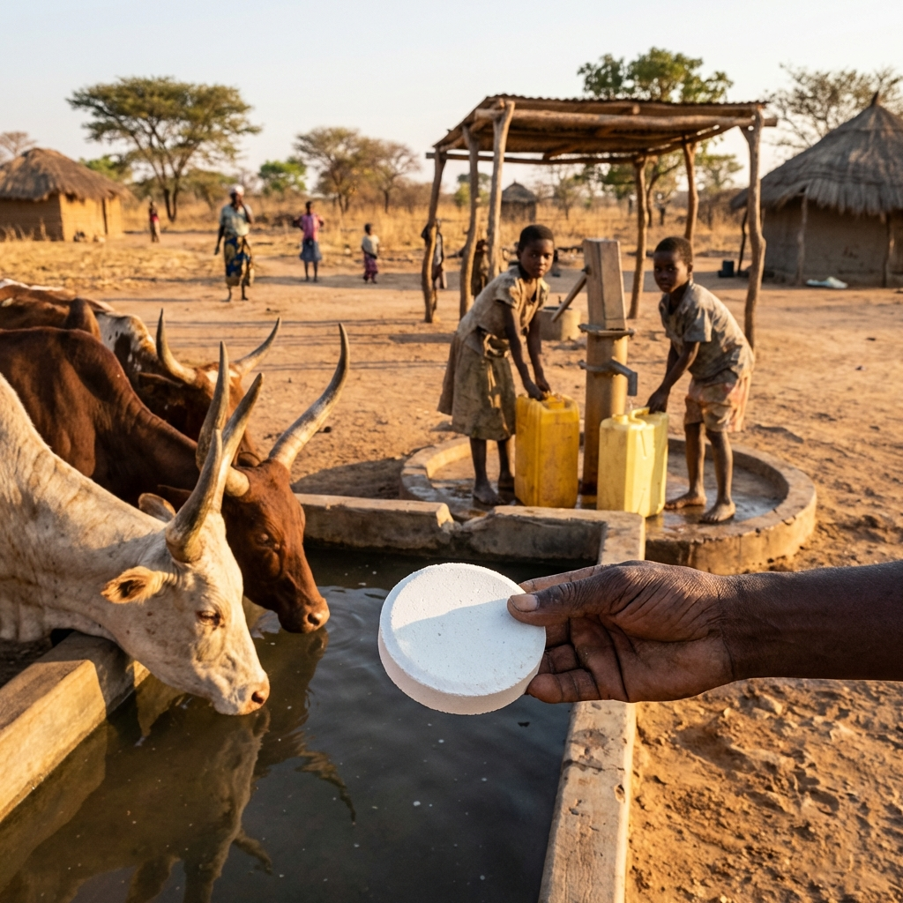
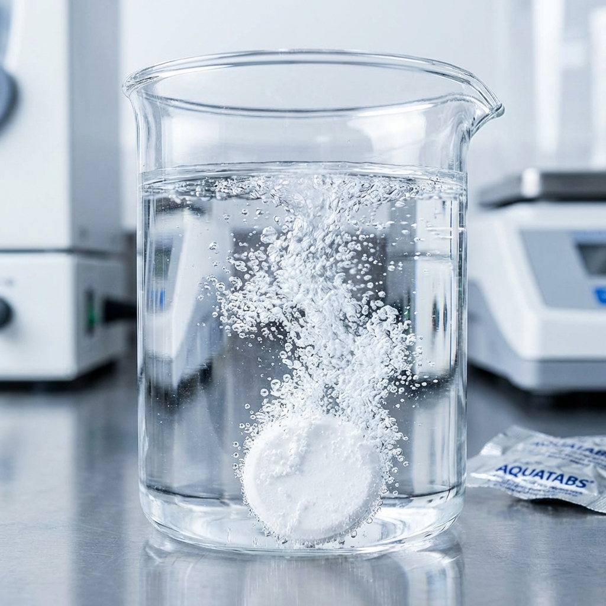

Safe Water
for
Every
Ecosystem.
5,000 human lives saved. Countless wildlife and livestock protected. Mission-critical disinfection at the source.

Beyond
Drinking Water.
Aquatabs doesn't just sponsor this mission—Aquatabs **Enables** it. We are utilizing the larger "hockey puck" format tablets for livestock and wildlife well purification, ensuring the survival of the entire community's livelihood and the surrounding ecosystem health.
Mission Alignment
"This project demonstrates the exact utility of Aquatabs at scale: Humanitarian impact meets conservation excellence."

Humanitarian
5,000 lives saved through individual and community-level drinking water disinfection.
Agricultural
Well purification for livestock—protecting community livelihoods through improved animal health.
Conservation
Protecting regional wildlife through safe, non-toxic well treatment in remote buffer zones.
Feature
Documentary
Tonga Transformation Story. Festival Circuit Presence.
The Water
Project Short
The Aquatabs Focal Point. Well purification results.
Solar Power
Focus
Sustainable Infrastructure. LONG-TERM RESILIENCE.
Journey
Documentary
Expedition Logistics. Reliability in extreme remote bush.
The Partnership
Vision.
Primary Funding + Product Supply Collaboration.
Case Study for Expanded Conservation Sector Applications.
Content Rights for NGO Lead-Gen and Agricultural Sales.
Association with Premium Outdoor Coalition (BD, YETI, GZ).
The Status Report
- WATER FILTERS [ CONFIRMED ]
- BLACK DIAMOND [ IN DISCUSSION ]
- YETI COOLERS [ ENGAGED ]
- GOAL ZERO [ PRELIMINARY ]
*Aquatabs serves as the mission-critical technology bridge between the humanitarian and conservation interventions.
Safe Water
is
Life.
We're inviting Medentech to lead the water disinfection narrative for the 2026 Zambia Expedition. Proving reliability where it matters most.